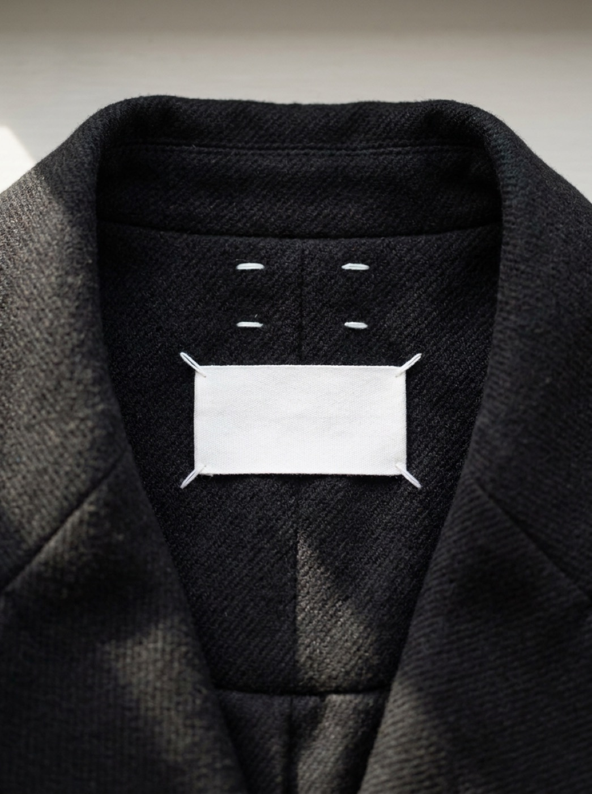
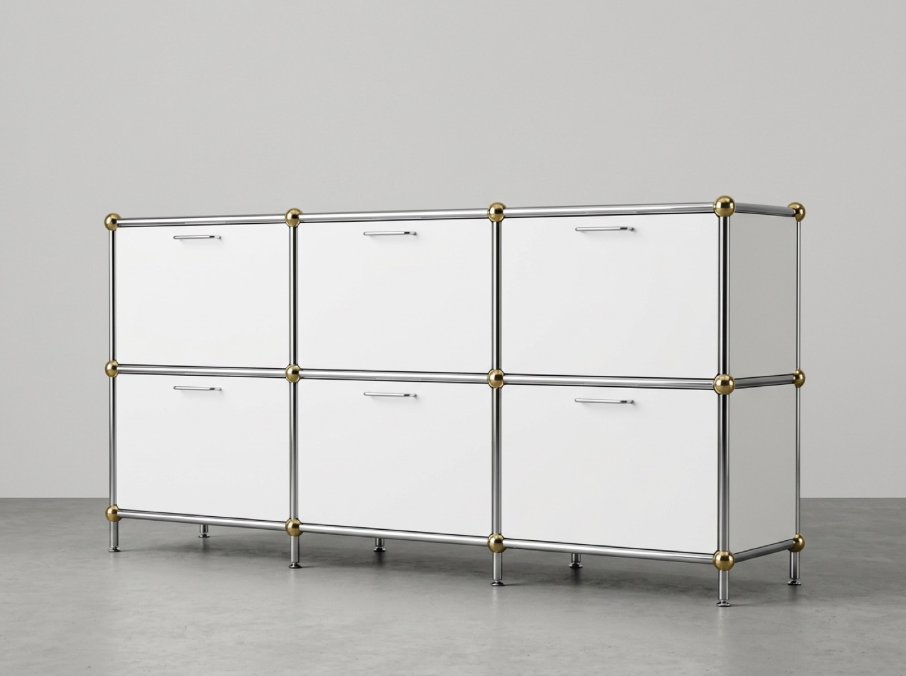
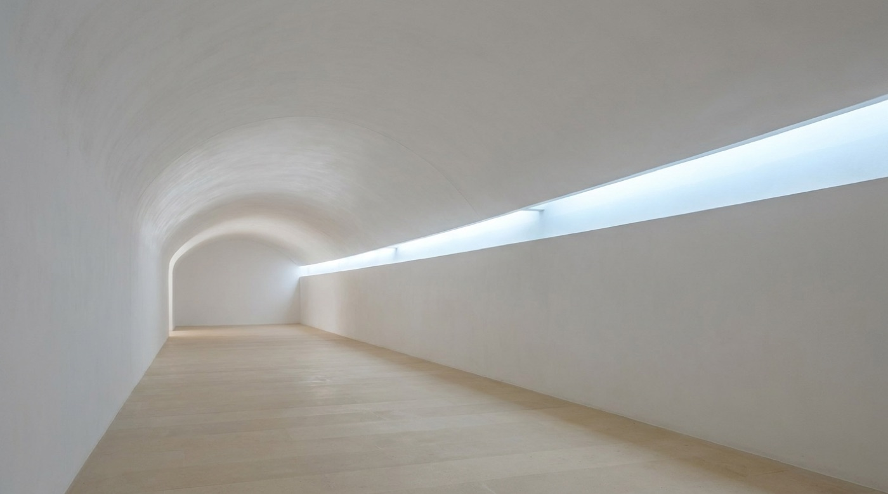
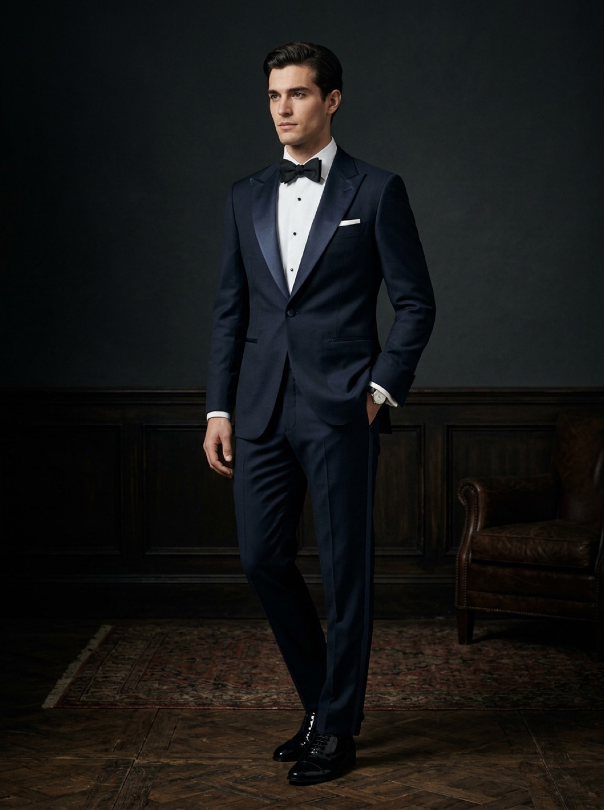

Lake Tahoe weekend
Shared album · 42 photos added by two people you follow, three days ago.
Strip any signature style to its skeleton and you find a short list of refusals, enforced for decades. Eleven follow — thread, paint, beech, steel, code, plaster, sheet metal. Watch what each never does.
Begin with the quietest mark in fashion. From the 1988 debut, every Margiela garment carried a blank white label fixed by four pick-stitches that show on the outside. No name, no exceptions.

Mondrian worked inside five colors and two line directions from about 1921 to 1944. Twenty-three years, no diagonal, no green. Each canvas differs; all are his at ten meters.
Vignelli ran the same discipline at city scale. His 1972 subway diagram permits two angles, one color per route, one dot per stop. The rules serve the rider's task, not the territory.
Constraint can come from production rather than principle. Thonet's No. 14 has six steam-bent beech parts, ten screws, two nuts; 36 knocked-down chairs fit a one-meter crate, and 50 million sold by 1930.
A century later USM reduced furniture to one connector. The chromed-brass ball joint, patented 1965, joins tube and panel into anything; a unit bought today bolts onto one from 1963.

CSS Zen Garden made the argument explicit in 2003: one untouchable HTML file, restyled by more than 200 contributed stylesheets into complete, unrelated designs. The markup is fixed; identity lives in the stylesheet.
Google scaled the idea in 2014. Material reduced every question to one metaphor, paper at fixed elevations, and locked layout to an 8dp grid. Millions of apps built by strangers still read as one family.
Shared album · 42 photos added by two people you follow, three days ago.
Your May statement is ready. Balance carried forward, no action needed.
One document was shared with your account and is waiting for review.
Google Material Design · 2014. One material at quantized elevations: resting cards 2dp, app bar 4dp, floating button 6dp. Hover or tab to a card and it lifts to 8dp in 200ms on the standard curve; click a button for the ink ripple. Everything snaps to an 8px grid. Roboto approximated with system-ui. Built live in CSS — inspect it.
From the 1964 original to the last air-cooled 993, the 911's grammar never broke: fastback falling unbroken to the tail, upright glass, round lamps high on the fenders. Track, wheels, and bumpers changed for 34 years inside that outline.
Singer proves the system survives reinterpretation. Each car starts as a 964 donor and absorbs over 4,000 hours of new work, yet not one line breaks the 1964 profile. Keep the grammar; redraw every word.
John Pawson has used one vocabulary since the 1990s: white plaster, pale stone, daylight from concealed slots. It served a Calvin Klein flagship in 1995, his own house in 1999, and this Trappist monastery in 2004. Clients change; the system does not.

Black tie has held since Henry Poole cut a short evening coat for the Prince of Wales in 1865. One dark color, silk-faced lapels, a single trouser braid, one button, no belt. Five rules, few enough to hold absolutely.

A signature style is a set of refusals kept for decades — coherence comes from what you never do, not from what you add.
Treat the five systems as one wardrobe and look for the four stitches. Racing-green permits one gold, #E8B23A. Neo-tactile permits one vermilion. Calm-ink permits one sage. Aperture permits one orange. Four of five share a law: a single accent, held absolutely. Foldwell breaks it with four. The portfolio question is Margiela's: which refusal would survive every reskin? If one accent per surface is your label, foldwell is either a deliberate exception or your first violation. Decide, and write it down.
Write a ten-refusal manifesto for one of your five systems — "never pure black", "never more than two type sizes per view", "never a third accent", "never animate opacity alone". Then audit one shipped page against it and fix the first violation you find.
Sources: Henry Poole & Co ledgers, 1865; MoMA permanent collection records (Thonet, USM Haller); Massimo Vignelli, The Vignelli Canon, 2010; Google I/O announcement, June 25, 2014; Dave Shea, CSS Zen Garden, 2003; Gary Hustwit, Rams, 2018; Brad Frost, Atomic Design, 2016.